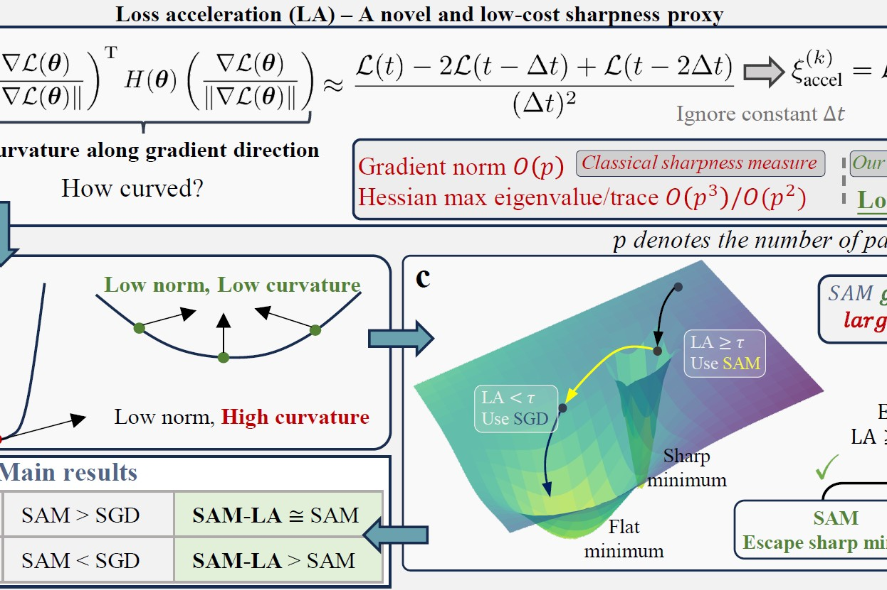
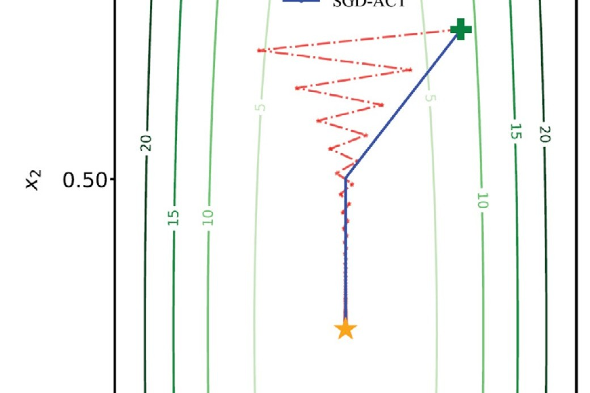
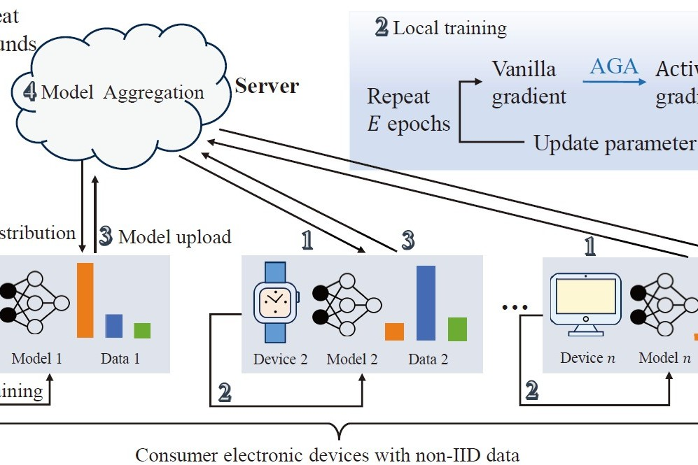
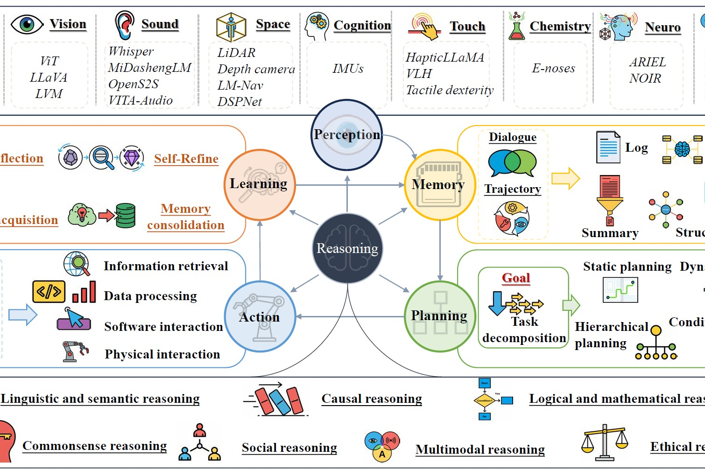

About
Hi! I am Chuan Qin (秦川), a Ph.D. candidate at the School of Information Science and Engineering, Lanzhou University, advised by Prof. Long Jin.
My research sits at the intersection of deep learning theory and embodied intelligence. I develop optimization algorithms that improve the generalization and efficiency of neural networks, and I apply these theoretical insights to robot control and decision-making. I am particularly interested in bridging dynamical systems theory and modern deep learning — understanding how training dynamics, sharpness-aware minimization, and gradient flow influence the generalization of large models. I believe that a principled understanding of optimization landscapes is key to building robust, efficient, and generalizable AI systems. I was deeply involved in projects funded by CCF-Huawei, CCF-Baidu, and CAAI-Huawei MindSpore. My work has appeared in Neural Networks, IEEE Transactions on Consumer Electronics, and IEEE/CAA Journal of Automatica Sinica. I serve as a reviewer for IEEE/CAA Journal of Automatica Sinica (JAS).
In my spare time, I am a half-marathon runner. Personal best: 1:42:38 at the 2024 Lanzhou Marathon.
News
Selected Publications
Published Accepted Under Review * denotes equal contribution, † denotes corresponding author.
-

SAM-LA: Efficient Sharpness-Aware Minimization Training via Loss AccelerationIEEE/CAA Journal of Automatica Sinica (JAS). IF=18.3 — Accept with minor revision. -

-

Adaptive Gradient Activation for Federated Learning on Consumer Electronic DevicesIEEE Transactions on Consumer Electronics (TCE), vol. 71, no. 2, pp. 5489-5500, 2025. IF=10.9 -

A Survey of Large-Model-Based AI AgentsTsinghua Science and Technology, In Press (DOI: 10.26599/TST.2026.9010072). -
AGRAdaptive Gradient Reshaping Boosting GeneralizationIEEE Transactions on Neural Networks and Learning Systems (TNNLS). SCI Q1 — Minor Revision.
-
CNOCollaborative Neurodynamic Optimization with Gradient Norm Penalty for Generalization ImprovementIEEE Transactions on Cybernetics (TCYB). IF=10.5 — Reject & Resubmit.
-
APQAnti-Perturbation Solution of Dynamic Multilinear Quaternion Tensor Equations With Application to ManipulatorsCAAI Transactions on Intelligence Technology. SCI Q1 — Major Revision.
-
FSBFuzzy Sign-Based Collaborative Neurodynamic Optimization With Application to RobotsIEEE Transactions on Fuzzy Systems (TFS). SCI Q1 — Under Review.
-
SAM-LSAM-L: Switching SAM with Loss Gap for Efficient TrainingConference on Neural Information Processing Systems (NeurIPS), 2026. — Under Review.
-
Other Manuscripts Under Review / Submitted• On Ternary Duality of Dynamical Systems, Information Theory, and Deep Learning — Submitted to PNAS (with Long Jin and Zhigang Zeng)
• Consistency is Key of Fitting and Degradation Alleviating for Deep Neural Networks — Under Review at IEEE TNNLS
• Quantum-Inspired Collaborative Neurodynamic Optimization for Traffic Flow Prediction — Under Review at IEEE TCE
• Understanding Residual Neural Networks from Sampling Theorem Perspective — Under Review at IEEE TETCI
Full publication list with bibtex is available on Google Scholar.
Research Projects
-
Differential Equations for Large Model Generalization and RobustnessKey Participant. Participated in core research on using neural ODEs to interpret and improve the generalization and robustness of foundation models.
-
Neural Differential Equations for Stability, Convergence, and Optimization of Large ModelsKey Participant. Participated in core algorithm development and investigated how neural ODEs can explain training dynamics and guide optimization strategies for large-scale models.
-
DNN Structure Design and Optimizer Construction via MindSpore and Differential EquationsKey Participant. Participated in core algorithm design and experimental validation, building neural ODE-inspired architectures and optimizers on the Huawei MindSpore framework.
-
Neural ODE Theory, Learning Algorithms, and ApplicationsKey Participant. Participated in algorithm design and experiments for neural ODE-based theory and applications in dynamical systems and control.
-
Stability and Convergence of Large Language Models for Tibetan NLPKey Participant. Participated in algorithm design and experiments to improve training stability and convergence for Tibetan language models.
Education
-
M.S.-Ph.D. Program in Computer Application TechnologyLanzhou University, School of Information Science and Engineering2021 — Present
-
B.Eng. in Naval Architecture and Ocean EngineeringHarbin Institute of Technology (HIT)2017 — 2021
Honors & Awards
- First Prize, Annual Conference Paper Award
- First Prize, Academic Scholarship, Lanzhou University
- Outstanding Graduate Student, Lanzhou University
Misc
Running
Half-marathon enthusiast. Races: 2024 Lanzhou Half Marathon (1:42:38), 2024 Yingshan Half Marathon (1:53:39).
Languages
Chinese (native), English (CET-6, professional working proficiency in reading and writing academic papers).